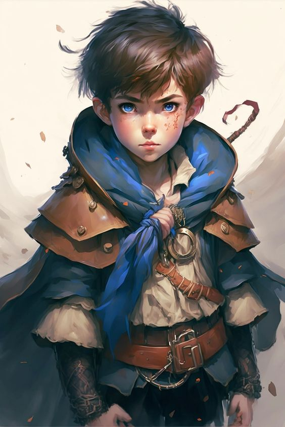
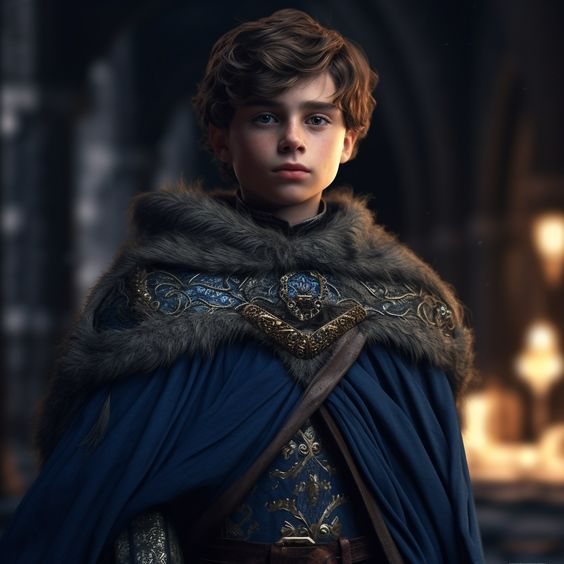
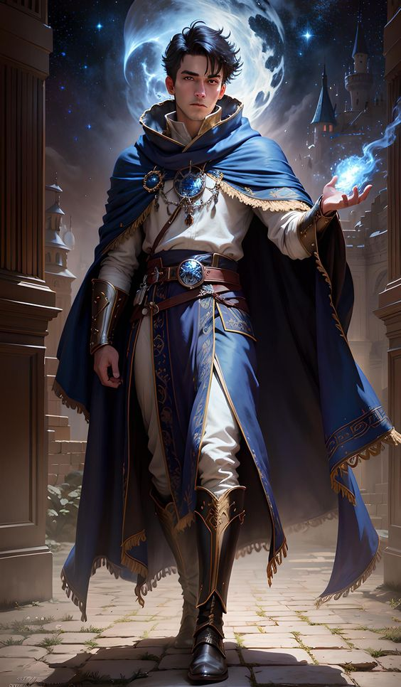

Quando eu era criança e estava na floresta explorando, atrás de aventuras, acabei encontrando um colar misterioso perdido na floresta, o que me chamou a atenção era que o colar tinha uma peça estranha e azul, com formato de estrela, desde então, eu sempre carreguei esse colar comigo em meu pescoço. Na mesma floresta, ao lado do colar, encontrei um livro perdido, velho e empoeirado, era um livro de magias, que eu também carrego junto comigo e com uma cópia que eu mesmo escrevi escondido. Eu sou um humano com um talento excepcional para a magia, mas infelizmente nasci e cresci em uma sociedade que temia e rejeitava o uso de poderes mágicos. A magia era considerada perigosa e abominável por seus conterrâneos, e qualquer pessoa que a utilizasse era banida do vilarejo. Desde muito cedo, demonstrei habilidades mágicas, e apesar do meu grande desejo de compartilhar minhas descobertas e talento com a sociedade , eu sabia sabia que isso resultaria em minha expulsão. Eu mantive minha magia em segredo, praticando em particular para aprimorar minhas habilidades.

Sempre tive sede por conhecimento, passei todos estes anos adquirindo o máximo de conhecimento e sabedoria, eu gosto de ler muito, uma prática que mantenho até os dias atuais. Porém de onde eu venho não possui muitos livros, apenas uma pequena biblioteca que não possui um vasto catálogo.

Em um dia fatídico, durante uma celebração na vila, uma série de eventos inesperados ocorreu. Um incêndio irrompeu e começou a se espalhar rapidamente pelas casas de madeira. As pessoas entraram em pânico, tentando extinguir as chamas, mas em vão. Eu sabia que eu tinha a habilidade de controlar o fogo, e um sentimento de responsabilidade me dominou. Sem pensar duas vezes, acabei me aproximando do incêndio e canalizei minha energia mágica. Usando meus poderes com maestria, consegui controlar o fogo, diminuindo sua intensidade e salvando várias casas e curei os feridos. As chamas enfraqueceram e foram extintas, deixando apenas marcas de destruição. Apesar da minha intenção de ajudar, a revelação da minha magia durante esse evento não foi bem recebida pelos moradores da vila. Sentindo-se ameaçados e traídos, eles me culparam pelo incêndio e pela existência da magia em si. Movidos pelo medo e pela ira, decidiram me expulsar imediatamente. Acabei sendo obrigado a deixar para trás minha casa e tudo o que conhecia. Vaguei por terras desconhecidas, encontrando refúgio em outras comunidades que também temiam a magia. Apesar de minha solidão e rejeição constante, mantive meu desejo de usar a magia para o bem e ajudar aqueles que precisavam. Foi aí que comecei a escrever o meu diário. Quando deixei as terras anti-magias passei a utilizar um chapéu pontiagudo combinado com minhas vestes vermelhas, agora eu finalmente podia ser quem eu sou. A partir daí, comecei a usufruir de minhas habilidades de magia e de minhas proficiências e minha sabedoria para curar pessoas e ajudá-las no geral para conseguir dinheiro e sobreviver, ofereço preços justos, porém gasto meu dinheiro livremente sabendo que posso morrer amanhã.